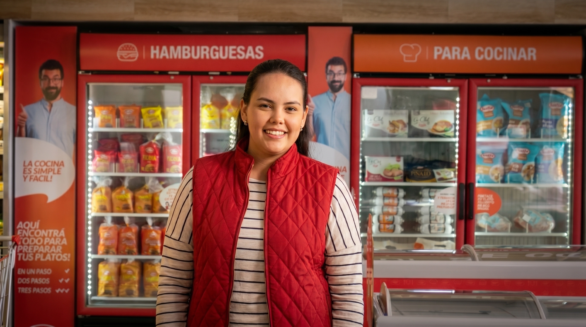
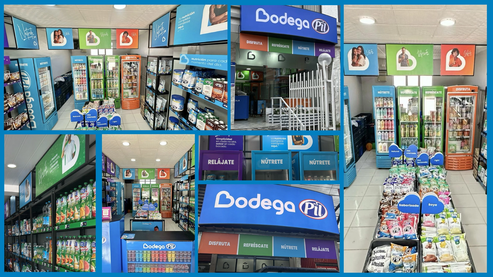

Portafolio


Casos de éxito
Marcas que ayudé a clarificar, reposicionar y crecer.

Brand Strategy · Retail
Sofía Al Paso
Modelo de transformación de marca para una de las empresas de alimentos más reconocidas de Bolivia. De la ejecución reactiva a la expansión estructurada.
Ver caso →
Nonprofit · FDT Method
Alalay
Transformación de identidad para una organización con 35 años apoyando a niños en Bolivia. Resultado: +95% de incremento en engagement.
Ver caso →
Retail Branding · Shopper
Bodega PIL
Rediseño shopper-centric de la experiencia retail para una bodega láctea de barrio. Ventas incrementaron más del 35% en tiendas adoptantes.
Ver caso →